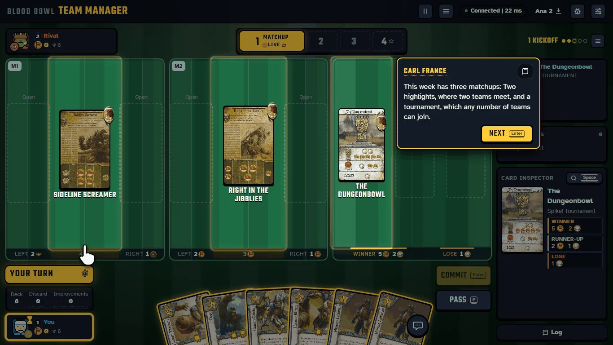
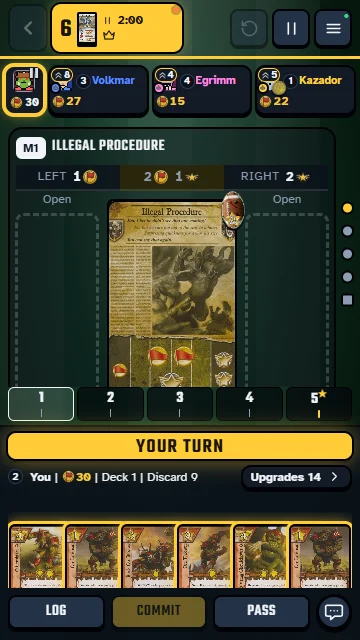
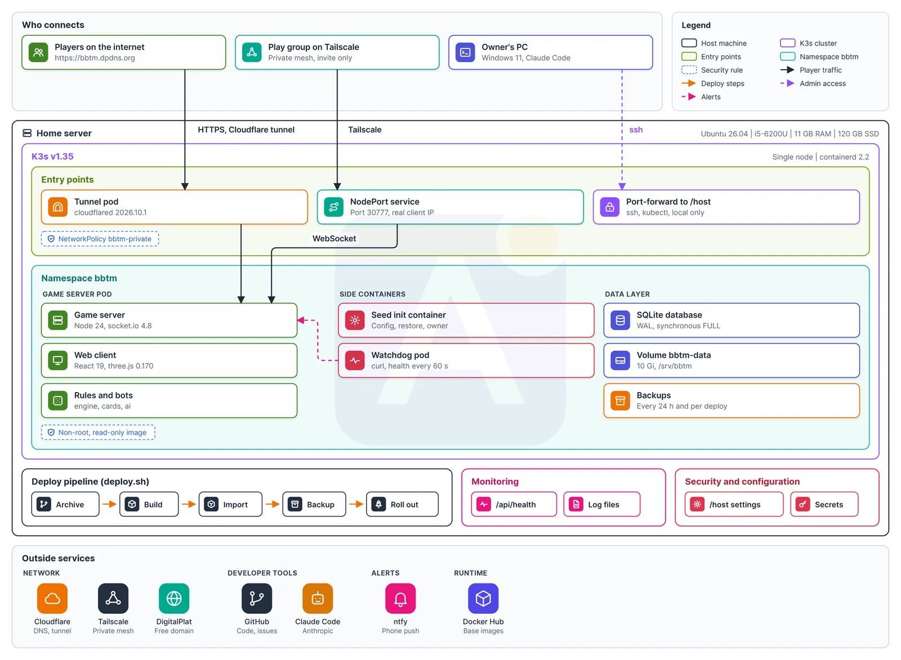

What I am proud of
- Then a steady release flow: 576 merged pull requests in 40 days and 48 tagged deploys, each with a one-line rollback.
- 148 user stories across 19 epics, each with Given / When / Then acceptance criteria, and 68 non-functional requirements linked in a traceability matrix.
- Every in-game report becomes a backlog item, and the player gets a reply when it is acknowledged, fixed and deployed. The day-9 playtest alone brought 35 reports.
- 50 players held a p95 of 113.4 ms against a 300 ms limit with 0 errors. Later 300 simulated players passed with 0 errors; At 500 one server-loop check failed, so no higher player limit is claimed.
- Live through a Cloudflare tunnel with no open port, phone health alerts and timed backups; Then a security plan against untrusted players (21 findings) and a security audit (31 leads, 9 fixed the next day).
Self-hosted multiplayer card game
Blood Bowl Team Manager
This one started with friends. We wanted to play a team-management card game together online, and no web version existed. So I treated a hobby like a real product: an end-to-end flow, user stories with acceptance criteria, numbered design questions, and mockups my friends commented on before a single screen was built.
Nine days after the analysis started, we had a group playtest. It produced 35 reports, and every one was logged and prioritized the next day. That day I knew this way of working holds up.
Then I got ambitious. I wanted evidence so concrete that no developer could look at it and call it a demo. So we load-tested the live server, and I keep the limits honest: 300 simulated players passed with 0 errors, and at 500 one server-loop check failed, so I claim no higher limit.
Fair play matters to me too. When I found a way to abuse Undo to re-roll the dice in my own play, I turned it into a rule: In a new match, an accepted Undo keeps the dice.
Built with
- The web app in the browser and the real-time game server.
- Runs the game server. After a deliberate restart in a load test, all 100 players and 25 of 25 matches came back.
- Puts the game on the internet with no open port on the machine.
- Health alerts to my phone and backups on a timer.
The review site, reports from real players and a release gate with a play round, all running on a live game. How I work

